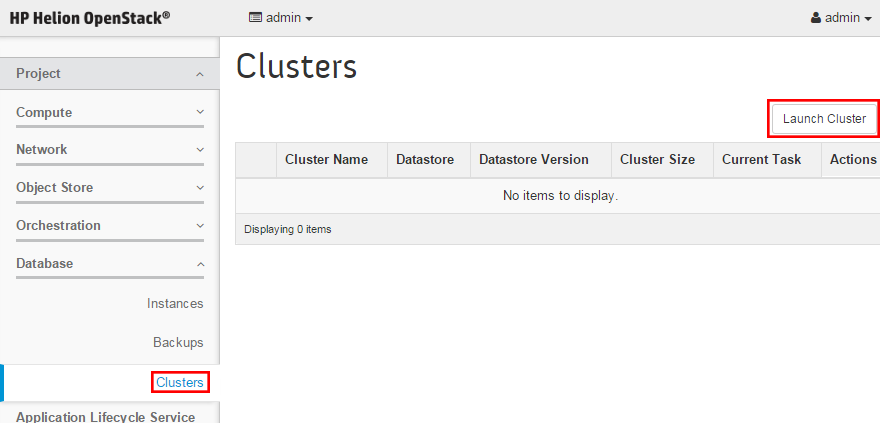

This document describes how to create a database cluster from the Horizon interface.
- Log into the Horizon web interface. Select Project, Database, Clusters. Click Launch Cluster.

- In the Launch Cluster page, enter the following information and click Launch
Cluster:
- Cluster Name: The name of the cluster to be created. The cluster ID will be
generated automatically.
- Datastore: The database type to be used. MySql, Vertica Preview, Redis and
MongoDB are supported.
- Flavor: The instance flavor (virtual hardware template) to use for the
cluster.
- Network: The OpenStack network to attach to the cluster.
- Volume Size: The size in GB of the new cluster.
Note: Databases require a
minimum volume size of 5, with a recommended size of 10.
- Number of Shards (MongoDB only): The number of MongoDB shards to span the
database across. One shard will be used to create the database cluster; this value
cannot be changed. See Sharding for more
information.
- Number of Instances: The number of OpenStack instances to span the database
across. Three instances will be used to create the cluster; this value cannot be
changed, but more instances can be added later.
-
Note: The number of instances and shards is not editable.
Note: When a database cluster is created from the Horizon interface, the instances are
created with random Availability Zones (AZ) across the available zones. To specify AZs for
specific instances, you must create the database cluster using the command line. See
Creating a database cluster from the command line for more details.
- The new cluster will be created, and appear in the Clusters page. Once it is done creating, the status will display as
None, indicating that the cluster is finished provisioning. Click on the name of the cluster to see details of the cluster and the status of the cluster.
Note:
As part of Vertica cluster creation, the Database Service generates SSH keys for instances on the vertica cluster that allow
the cluster setup script to connect to all the instances and run cluster setup commands. These keys are protected on the guest
instances as they are locked down by file ACLs allowing access only to the vertica processes. After the cluster create process is
finished, these keys are deleted from all of the nodes.
These auto-generated keys are different from the Administrator SSH key that will allow the Database Service administrator to connect to
the VM for day-to-day service management and operations, and to upgrade the trove guest instances. The Adminsitrator SSH
key is kept intact during the Cluster Create process. These keys should be secured by ACLs, as exposure of them could result in compromise
of the database service and databases.